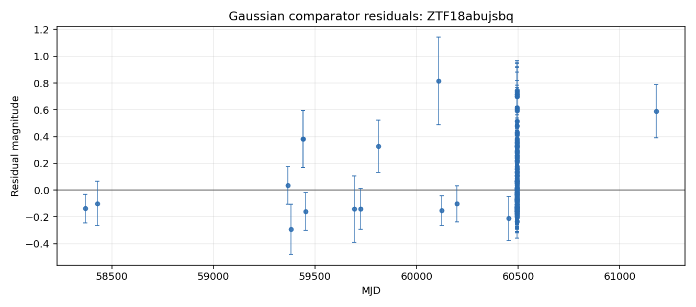

Evidence Narrative
A short, readable synthesis of the separate evidence layers and their limits.
A case-file-first system for finding astronomical objects worth human attention.
Argus turns real ZTF/ALeRCE light-curve data into readable evidence packages. It preserves broker classifications as metadata, runs cautious comparison layers, and explains what the evidence can and cannot support.


A short, readable synthesis of the separate evidence layers and their limits.
Standard light-curve summary values that support comparison across objects.
Phenomenological checks that make simple model fit and model failure easier to inspect.
Catalog context is handled as external metadata and is kept separate from Argus conclusions.
The case file records caveats, sparse-context limits, and recommended next checks.
The same case can be inspected as JSON, Markdown, HTML, and static figures.
The public demo now includes a small multi-object case-file index: a compact static review queue of objects prepared for inspection. It sorts existing case files with a transparent review-priority heuristic, includes the deterministic assessment summary, summarizes evidence status, and links to the available artifacts.
The static workstation prototype turns the same public case-file artifacts into a dark linked-view inspection surface. Queue Mode shows visual glyphs, and Case Mode links light-curve, residual, assessment, evidence, and sky-context panels for one selected object.
Argus is a case-file-first astronomy system, not another classifier. These examples do not decide any object's physical identity or assert a final finding. They organize evidence for further review.
{kind=link}